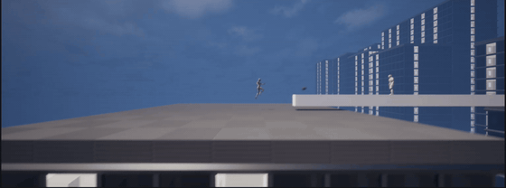
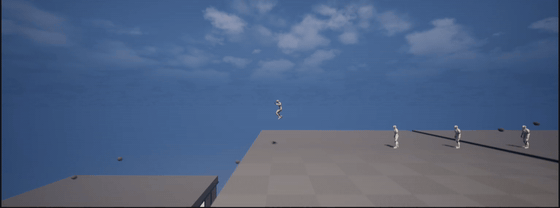
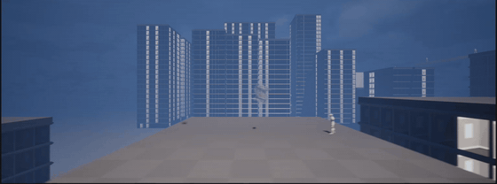

Broken Peaces (lead mechanic/level designer, programmer, writer)
This is the trailer for Broken Peaces, which won 1st place and community choice at UCLA's 2026 Fiat Ludum Game Jam.
Broken Peaces is a game that explores the horrors of nuclear war and won 1st Place at the 2026 UCLA Fiat Ludum Game Jam (as well as Community Choice). As team lead, I collaborated closely with our diverse team, which enhanced not only the development process but also the narrative. In Broken Peaces, you play as three characters across different time periods in Korea, India, and China, reflecting the cultural backgrounds of our team members. The game is voice acted in 3 languages, contains 2D painted cutscenes, and samples real instruments and singing in the music.

Playtesting Complex Movement Mechanics



After the team had settled on movement mechanic ideas we liked, I immediately began prototyping. Within an hour, I had made the first version of the dash attack. I had my teammates and friends try it out and give feedback. As we slowly added more components (buildings, enemies, other mechanics, etc.), we retested the mechanic to make sure it fit well with the environment.
For example, one major change I made was the length of the dash and the momentum after it finished. The dash itself is just a timeline that sets the player's location to points along the path. I noticed that many playtesters tried to chain the attack into another movement ability. To aid this, I added a small physics impulse after the dash finishes that keeps the player soaring in an arc after the dash. This allowed players to dash through one enemy and fluidly chain into the rocket launcher to keep their forward momentum.
Conflict Resolution Through a Unified Vision


I served as the lead programmer, lead mechanic/level designer, and lead writer, but all team members contributed to each area of the game. Before we started development, our team got together and decided on a unified vision: scale. We wanted every part of the game to feel larger. This gave us a framework to solve disagreements when development began. For example, one team member wanted to have players travel inside buildings during gameplay. Together, we made a pros and cons list based on how the mechanic fit with the unified vision. A pro is that going inside buildings makes the world narrative feel bigger, but a con is that it slows down gameplay, which could harm the scale of the levels. Our solution was to have cutscenes that showed important indoor narrative scenes (like a character remembering the death of his mother), which allowed us to keep the pros of the idea while removing the cons.
Lessons Learned
Although it wasn't my first team project, Broken Peaces helped me really refine my teamwork skills. Our team became better at communicating once we established a shared language (analyzing ideas relative to the unified vision). As the team leader, I learned how to work with each team member to find the strengths and weaknesses of their ideas.
I also learned about playtesting and rapid iteration. The immense time pressure required me to create prototypes in minutes and playtest efficiently. I witnessed firsthand how playtesting can reveal interactions that are much more fun than anything I could think of on my own. Seeing how players behave with the tools they are given and adapting to their behavior is an integral part of game design.